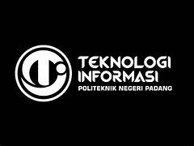

Selamat Datang

Teknologi Informasi
- D3 Teknik Komputer
- D3 Teknik Komputer (Kampus Solok)
- D3 Sistem Informasi (Kampus Tanah Datar)
- D3 Manajemen Informatika
- D3 Manajemen Informatika (Kampus Pelalawan)
- D4 Teknologi Rekayasa Perangkat Lunak
- D4 Animasi
Jurusan Teknologi Informasi menghasilkan tenaga profesional di bidang teknologi informasi, khususnya dalam pengelolaan sistem berbasis komputer yang mampu beradaptasi di berbagai sektor industri modern.
Fasilitas meliputi ruang kelas ber-AC, laboratorium komputer, serta lingkungan belajar yang nyaman.
Akreditasi Program Studi
| No | Program Studi | Jenjang | Akreditasi |
|---|---|---|---|
| 1 | Teknik Komputer | D3 | Baik Sekali |
| 2 | Manajemen Informatika | D3 | Unggul |
| 3 | Teknologi Rekayasa Perangkat Lunak | D4 | Baik Sekali |